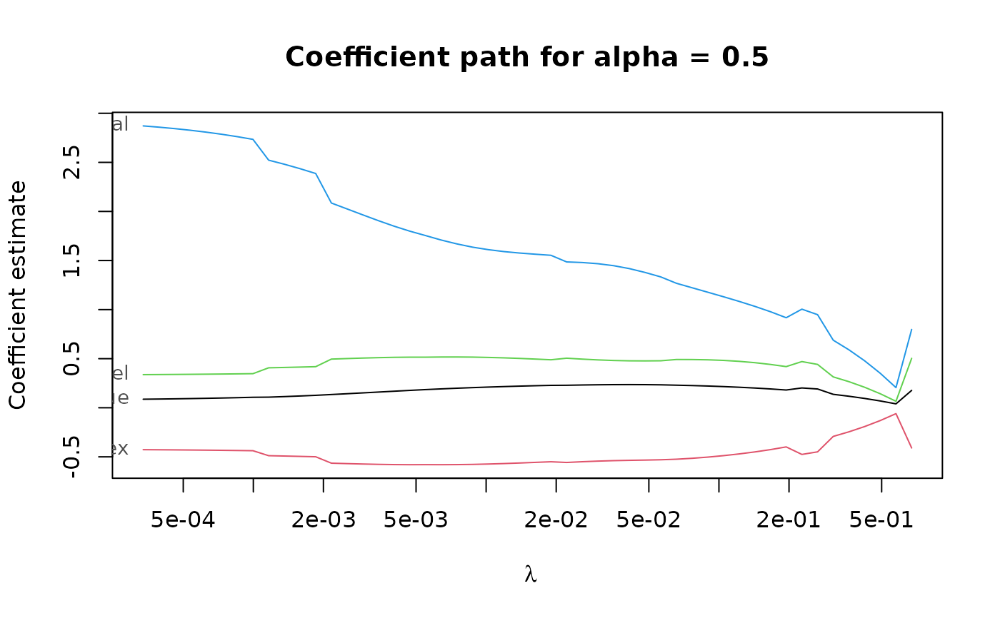
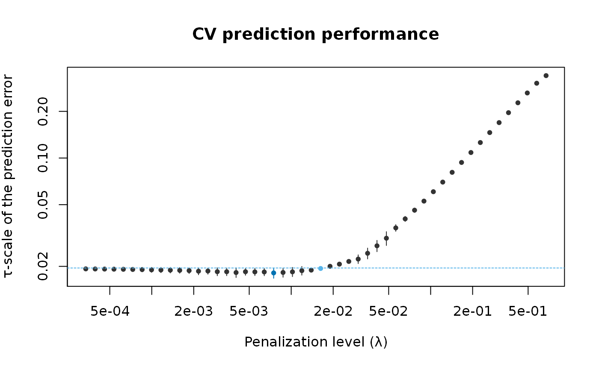

Compute elastic net S-estimates (PENSE estimates) along a grid of penalization levels with optional penalty loadings for adaptive elastic net.
Usage
pense(
x,
y,
alpha,
nlambda = 50,
nlambda_enpy = 10,
lambda,
lambda_min_ratio,
enpy_lambda,
penalty_loadings,
intercept = TRUE,
bdp = 0.25,
cc,
add_zero_based = TRUE,
enpy_specific = FALSE,
other_starts,
carry_forward = TRUE,
eps = 1e-06,
explore_solutions = 0,
explore_tol = 0.1,
explore_it = 5,
max_solutions = 5,
comparison_tol = sqrt(eps),
sparse = FALSE,
ncores = 1,
standardize = TRUE,
algorithm_opts = mm_algorithm_options(),
mscale_opts = mscale_algorithm_options(),
enpy_opts = enpy_options(),
...
)Arguments
- x
nbypmatrix of numeric predictors.- y
vector of response values of length
n. For binary classification,yshould be a factor with 2 levels.- alpha
elastic net penalty mixing parameter with \(0 \le \alpha \le 1\).
alpha = 1is the LASSO penalty, andalpha = 0the Ridge penalty. Can be a vector of several values, butalpha = 0cannot be mixed with other values.- nlambda
number of penalization levels.
- nlambda_enpy
number of penalization levels where the EN-PY initial estimate is computed.
- lambda
optional user-supplied sequence of penalization levels. If given and not
NULL,nlambdaandlambda_min_ratioare ignored.- lambda_min_ratio
Smallest value of the penalization level as a fraction of the largest level (i.e., the smallest value for which all coefficients are zero). The default depends on the sample size relative to the number of variables and
alpha. If more observations than variables are available, the default is1e-3 * alpha, otherwise1e-2 * alpha.- enpy_lambda
optional user-supplied sequence of penalization levels at which EN-PY initial estimates are computed. If given and not
NULL,nlambda_enpyis ignored.- penalty_loadings
a vector of positive penalty loadings (a.k.a. weights) for different penalization of each coefficient. Only allowed for
alpha> 0.- intercept
include an intercept in the model.
- bdp
desired breakdown point of the estimator, between 0.05 and 0.5. The actual breakdown point may be slightly larger/smaller to avoid instabilities of the S-loss.
- cc
tuning constant for the S-estimator. Default is chosen based on the breakdown point
bdp. This affects the estimated coefficients only ifstandardize=TRUE. Otherwise only the estimated scale of the residuals would be affected.- add_zero_based
also consider the 0-based regularization path. See details for a description.
- enpy_specific
use the EN-PY initial estimates only at the penalization level they are computed for. See details for a description.
- other_starts
a list of other staring points, created by
starting_point(). If the output ofenpy_initial_estimates()is given, the starting points will be shared among all penalization levels. Note that if a the starting point is specific to a penalization level, this penalization level is added to the grid of penalization levels (either the manually specified grid inlambdaor the automatically generated grid of sizenlambda). Ifstandardize = TRUE, the starting points are also scaled.- carry_forward
carry the best solutions forward to the next penalty level.
- eps
numerical tolerance.
- explore_solutions
number of solutions to keep after the exploration step. The best
explore_solutionsare then iterated to full numerical toleranceeps. If 0, all non-duplicated solutions are kept.- explore_tol, explore_it
numerical tolerance and maximum number of iterations for exploring possible solutions. The tolerance should be (much) looser than
epsto be useful, and the number of iterations should also be much smaller than the maximum number of iterations given viaalgorithm_opts.explore_tolis also used to determine if two solutions are equal in the exploration stage.- max_solutions
retain only up to
max_solutionsunique solutions per penalization level.- comparison_tol
numeric tolerance to determine if two solutions are equal. The comparison is first done on the absolute difference in the value of the objective function at the solution. If this is less than
comparison_tol, two solutions are deemed equal if the squared difference of the intercepts is less thancomparison_toland the squared \(L_2\) norm of the difference vector is less thancomparison_tol.- sparse
use sparse coefficient vectors.
- ncores
number of CPU cores to use in parallel. By default, only one CPU core is used. Not supported on all platforms, in which case a warning is given.
- standardize
logical flag to standardize the
xvariables prior to fitting the PENSE estimates. Coefficients are always returned on the original scale. This can fail for variables with a large proportion of a single value (e.g., zero-inflated data). In this case, either compute withstandardize = FALSEor standardize the data manually.- algorithm_opts
options for the MM algorithm to compute the estimates. See
mm_algorithm_options()for details.- mscale_opts
options for the M-scale estimation. See
mscale_algorithm_options()for details.- enpy_opts
options for the ENPY initial estimates, created with the
enpy_options()function. Seeenpy_initial_estimates()for details.- ...
ignored.
Value
a list-like object with the following items
alphathe sequence of
alphaparameters.lambdaa list of sequences of penalization levels, one per
alphaparameter.estimatesa list of estimates. Each estimate contains the following information:
interceptintercept estimate.
betabeta (slope) estimate.
lambdapenalization level at which the estimate is computed.
alphaalpha hyper-parameter at which the estimate is computed.
bdpchosen breakdown-point.
objf_valuevalue of the objective function at the solution.
statuscodeif
> 0the algorithm experienced issues when computing the estimate.statusoptional status message from the algorithm.
bdpthe actual breakdown point used.
callthe original call.
Strategies for Using Starting Points
The function supports several different strategies to compute, and use the provided starting points for optimizing the PENSE objective function.
Starting points are computed internally but can also be supplied via other_starts.
By default, starting points are computed internally by the EN-PY procedure for penalization
levels supplied in enpy_lambda (or the automatically generated grid of length nlambda_enpy).
By default, starting points computed by the EN-PY procedure are shared for all penalization
levels in lambda (or the automatically generated grid of length nlambda).
If the starting points should be specific to the penalization level the starting points'
penalization level, set the enpy_specific argument to TRUE.
In addition to EN-PY initial estimates, the algorithm can also use the "0-based" strategy if
add_zero_based = TRUE (by default). Here, the 0-vector is used to start the optimization at
the largest penalization level in lambda. At subsequent penalization levels, the solution at
the previous penalization level is also used as starting point.
At every penalization level, all starting points are explored using the loose numerical
tolerance explore_tol. Only the best explore_solutions are computed to the stringent
numerical tolerance eps.
Finally, only the best max_solutions are retained and carried forward as starting points for
the subsequent penalization level.
See also
pense_cv() for selecting hyper-parameters via cross-validation.
coef.pense_fit() for extracting coefficient estimates.
plot.pense_fit() for plotting the regularization path.
Other functions to compute robust estimates:
regmest()
Examples
# Compute the PENSE regularization path for Freeny's revenue data
# (see ?freeny)
data(freeny)
x <- as.matrix(freeny[ , 2:5])
regpath <- pense(x, freeny$y, alpha = 0.5)
plot(regpath)

# Extract the coefficients at a certain penalization level
coef(regpath, lambda = regpath$lambda[[1]][[40]])
#> (Intercept) lag.quarterly.revenue price.index
#> -6.5082299 0.2510560 -0.6879670
#> income.level market.potential
#> 0.7090986 0.9409940
# What penalization level leads to good prediction performance?
set.seed(123)
cv_results <- pense_cv(x, freeny$y, alpha = 0.5,
cv_repl = 2, cv_k = 4)
plot(cv_results, se_mult = 1)

# Print a summary of the fit and the cross-validation results.
summary(cv_results)
#> PENSE fit with prediction performance estimated by 2 replications of 4-fold ris
#> cross-validation.
#>
#> 4 out of 4 predictors have non-zero coefficients:
#>
#> Estimate
#> (Intercept) -4.7921541
#> X1 0.3338834
#> X2 -0.6140406
#> X3 0.6954769
#> X4 0.7316339
#> ---
#>
#> Hyper-parameters: lambda=0.0003364066, alpha=0.5
# Extract the coefficients at the penalization level with
# smallest prediction error ...
coef(cv_results)
#> (Intercept) lag.quarterly.revenue price.index
#> -4.7921541 0.3338834 -0.6140406
#> income.level market.potential
#> 0.6954769 0.7316339
# ... or at the penalization level with prediction error
# statistically indistinguishable from the minimum.
coef(cv_results, lambda = '1-se')
#> (Intercept) lag.quarterly.revenue price.index
#> -11.4754472 0.2265866 -0.5739724
#> income.level market.potential
#> 0.5417608 1.3768215